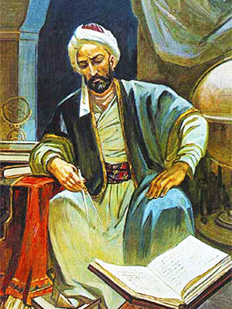

 “Bayt ul-hikma”da faoliyat ko‘rsatgan olimlardan yana biri buyuk astronom, matematik va geograf Abul Abbos Ahmad ibn Muhammad ibn Kasir al-Farg‘oniy (797–865). U Farg‘ona vodiysining Quva shahrida tavallud topgani uchun Sharqda Al-Farg‘oniy, Yevropada esa Alfraganus taxallusi bilan shuhrat topgan. U astronomiya matematika va geografiya fanlari bilan shug‘ullandi. Qator ilmiy va amaliy asarlar yozib qoldirdi. Damashqdagi rasadxonada osmon jismlari harakati va o‘rnini aniqlash, yangicha zij (astronomic jadval) yaratish ishlariga rahbarlik qildi. 832–833-yillarda Suriyaning shimolida Sinjor dashtida va ar-Raqqa oralig‘ida Yer meridianining bir darajasi uzunligini o‘lchashda qatnashdi.
861-yilda al-Farg‘oniy rahbarligida Nil daryosi sohilida qurilgan qadimgi gidrometr – daryo oqimi sathini belgilaydigan “Miqyos an-Nil” inshooti va uning darajoti qayta tiklandi. Yozma manbalarda qayd etilishicha, Al-Farg‘oniy ilk o‘rta asr falakiyot, riyoziyot va geografiya ilmlari yo‘nalishida bir qancha ilmiy va amaliy asarlar yozib qoldirgan. Uning asosiy astronomik asari – „Kitob al-harakot as-samoviya va javomi’ ilm an-nujum“ („Samoviy harakatlar va umumiy ilmi nujum kitobi“). Bu asar „Astronomiya asoslari haqidagi kitob“ nomi bilan ham maʼlum bo‘lib, 1145 va 1175 yillarda Yevropada lotin tiliga tarjima etiladi. Shundan so‘ng Al-Farg‘oniy nomi lotinlashtirilib, „Alfraganus“ shaklida G‘arbda shuhrat topadi. Uning „Astronomiya asoslari haqidagi kitob“ asaridan bir necha asrlar davomida Yevropa universitetlarida astronomiya fani bo‘yicha asosiy darslik sifatida foydalanilgan, chunki bu kitob zamonasidagi astronomiya haqidagi eng muhim va zarur bo‘lgan bilimlarni oʻz ichiga olgan. Uning geografiyaga oid bo‘limi Yer yuzidagi mamlakatlar va shaharlar haqidagi eng boshlang‘ich va zaruriy bilimlarga bag‘ishlangan bo‘lib, „Yerdagi maʼlum mamlakatlar va shaharlarning nomlari va har bir iqlimdagi hodisalar haqida“ deb ataladi. Asarda falakiyot va geografiya ilmlarining asosiy mazmuni, vazifalari va qismlari tushunarli dalillar asosida sodda qilib bayon etiladi. Xususan, Yerning dumaloqligi, bir xil osmon yoritqichlarining turli vaqtda ko‘tarilishi, tutilishi va bu tutilishning har bir joydan turlicha ko‘rinishi, masofalar o‘zgarishi bilan ularning ko‘rinishi o‘zgarishi haqida qimmatli mulohazalar bildiriladi. Bu kitob XII asrdayoq lotin va ibroniy tillariga tarjima qilinib, nafaqat musulmon Sharqidagi, balki Yevropa mamlakatlaridagi astronomiya ilmining rivojini boshlab berdi. Yevropada mashhur bo‘lgan alloma nomi XVI asrda Oydagi kraterlardan biriga berilgan.
1998-yil oktabrda alloma Ahmad al-Farg‘oniy tavalludining 1200 yilligi nishonlandi. Farg‘ona shahrida Al-Farg‘oniy nomi bilan bog‘ yaratildi va buyuk allomaga haykal o‘rnatildi.